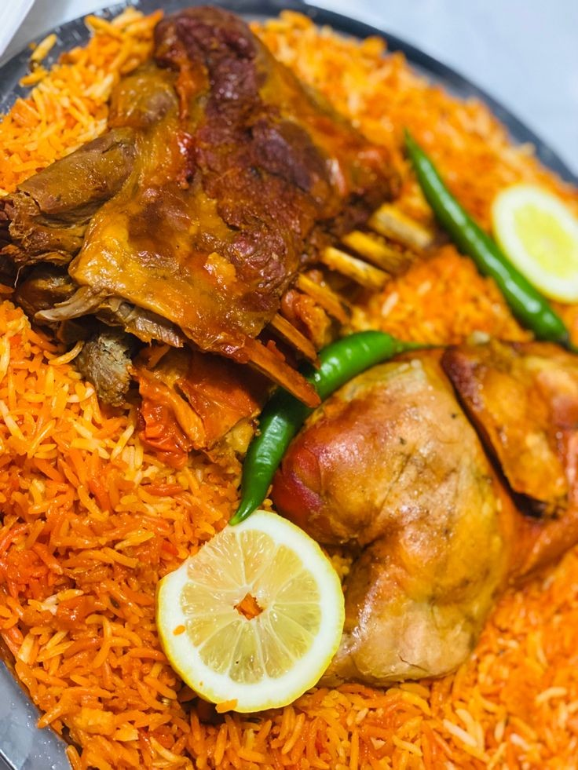

Yemeni Mandi

Description
Mandi is a traditional Yemeni dish made of meat and rice with a special blend of spices.
It is cooked in a pit underground to give it a unique smoky flavor.
Ingredients
- 1 kg of Lamb or Chicken
- 3 cups of Basmati Rice
- Mandi Spices (Cardamom, Cloves, Cinnamon)
- Saffron water
- Charcoal for smoking
Steps
- Season the meat with spices and cook until tender.
- Boil the rice with whole spices until half-cooked.
- Place the meat over the rice and add saffron water.
- Place a small piece of burning charcoal in oil to create smoke.
- Close the pot tightly for 15 minutes before serving.
Back to Home